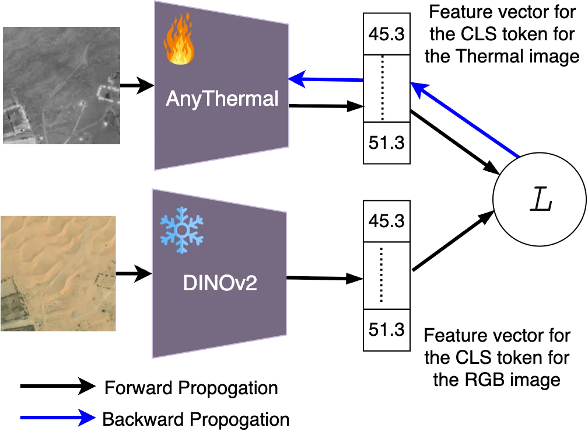
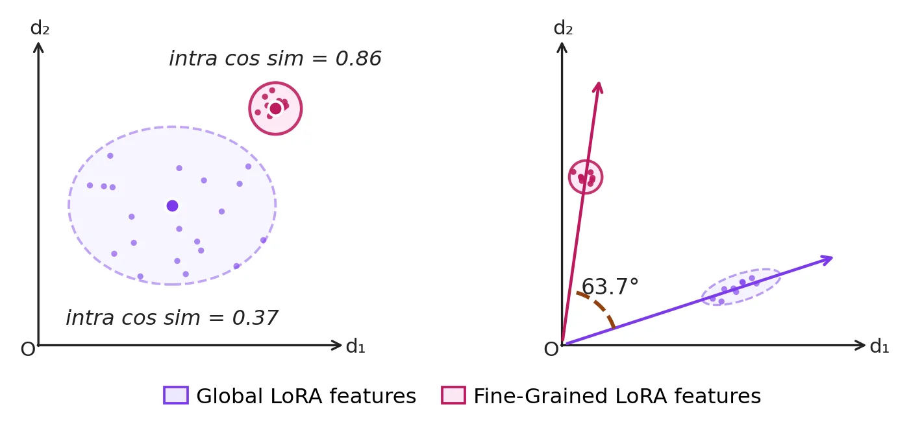
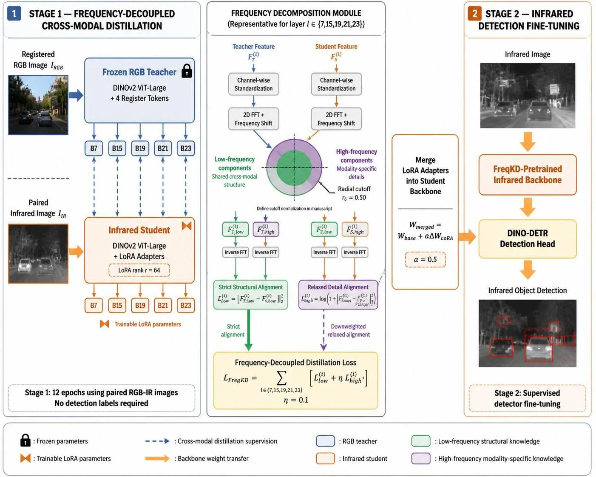
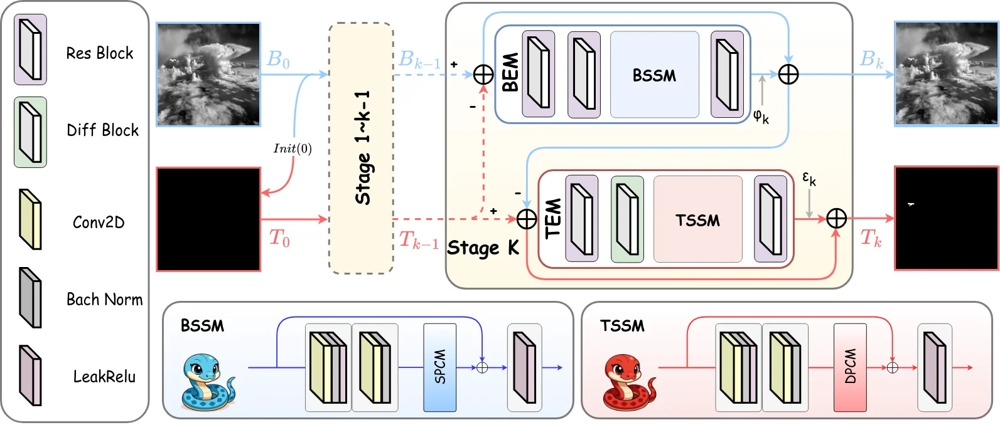
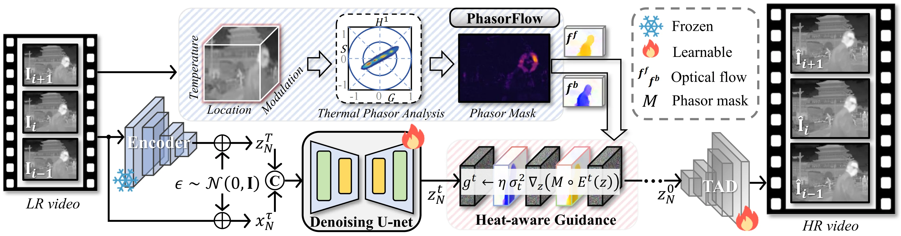
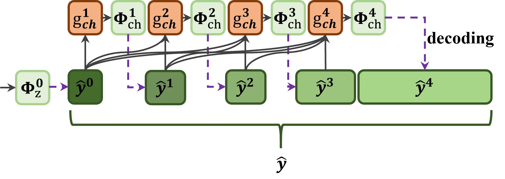

红外轮廓压缩新前沿
红外轮廓图像是一类特殊的视觉信号：它既不是自然图像，也不是纯粹的二值边缘图，而是介于两者之间的稀疏准二值结构叠加在低纹理辐射场之上的混合体。这种独特的数据结构使得现有的压缩方案——无论是经典的 JBIG、链码（chain codes）等二值编码标准，还是近年来基于深度学习的端到端图像压缩模型——都无法充分挖掘其内在冗余。
经典方法的问题在于：JBIG 和 CCITT G4 等标准假设图像是严格的二值文档或线条图，而红外轮廓图像虽然视觉上呈现为稀疏的边缘结构，但其灰度值并非简单的 0/1，而是携带了温度梯度的连续辐射信息。链码可以高效描述几何轮廓，但无法编码轮廓周围的辐射场上下文。另一方面，学习式压缩（如基于 VAE/GAN 的端到端 codec）大多针对 RGB 自然图像设计，其归纳偏置（局部纹理丰富、颜色空间平滑）与红外轮廓图像的统计特性（大面积平坦区域 + 极稀疏的高频边缘）严重失配。我们在 红外轮廓图像压缩调研 中已经指出，R16 LearnedCompr-EO 的实验表明，直接将 RGB 学习式压缩架构应用于单通道热红外图像，性能甚至不如 JPEG2000——这是一个值得深思的负面结果。
在我们之前的系列文章中，已经从多个角度触及了这一问题：边缘图像压缩调研 系统梳理了二值/边缘图的经典编码范式（JBIG、游程编码、链码、结构保持编码），并讨论了语义图压缩和 ICM 等前沿方向；红外轮廓图像压缩调研 覆盖了红外成像的物理特性、传统编码标准、学习式压缩以及 RGB-IR 联合压缩的全景；SA-ICM 深入解读了 SAM 边缘监督下的 ICM 三路线架构，展示了边缘先验如何提升压缩质量；Huf-RLC 则聚焦于小波概率模型与零游程增强 Huffman 编码在线扫红外图像上的应用。
然而，上述工作主要停留在"已有方法的整理与对比"层面。本文的目标是向前迈进一步：从计算机视觉的最新研究中提炼五个新方向，为红外轮廓压缩注入新的技术思路。这五个方向分别是：
- 方向 A：红外感知基础模型 —— 用预训练的热红外特征替代像素级重建目标，将压缩从"保真像素"转向"保真语义"
- 方向 B：频域分解与融合 —— 将高频轮廓分量与低频辐射场分量显式分离，实施差异化编码策略
- 方向 C：稀疏结构表征 —— 借鉴红外小目标检测中"前景=稀疏分量"的建模范式，将轮廓视为可稀疏编码的信号
- 方向 D：压缩后增强与复原 —— 利用扩散模型和热物理先验，在解码端恢复压缩损失的轮廓细节
- 方向 E：任务驱动与语义压缩 —— 让码率分配服从下游检测/分割任务的需求，而非盲目追求 PSNR
这五个方向并非彼此孤立，而是在后续章节中逐步揭示出内在的统一性：它们共同指向一个核心洞察——红外轮廓压缩不应被视为通用图像压缩的一个子问题，而应被重新定义为一个结构化信号的语义编码问题。本文将从 CV 前沿论文中提取具体的方法论和技术细节，为这一重新定义提供实证支撑。
在传统图像压缩中，优化目标几乎总是像素级的失真度量（MSE、PSNR）或手工设计的感知指标（SSIM、LPIPS）。但对于红外轮廓图像而言，像素级保真并非最终目的——真正重要的是保留那些对下游任务（检测、分割、识别）有意义的语义结构和热辐射模式。如果存在一个高质量的热红外特征提取器，能够提供比原始像素更紧凑、更具判别力的表示，那么压缩的目标就可以从"重建像素"升级为"重建特征"，从而在同等码率下获得更高的任务性能。
这正是红外感知基础模型的价值所在。本节详细讨论两项代表性工作：AnyThermal 和 T-CLIP，它们分别从视觉自监督和视觉-语言对齐两个角度，构建了通用的热红外特征表示。
2.1 AnyThermal：跨模态蒸馏构建通用热红外编码器
AnyThermal #AnyThermal-2026 由 CMU 机器人研究所等机构提出，核心目标是解决一个根本性问题：热红外图像缺乏互联网规模的预训练数据，导致热红外特征提取器无法像 RGB 领域的 DINOv2、MAE 那样受益于大规模自监督预训练。直接使用 RGB 预训练的骨干网络处理热红外图像，会丢失大量热特有的域信息。
AnyThermal 的解决方案是跨模态知识蒸馏：以冻结的 DINOv2 ViT-B/14 作为教师网络处理 RGB 图像，以可训练的 DINOv2 ViT-B/14 作为学生网络处理热红外图像（灰度转三通道），通过 CLS token 上的对比损失（InfoNCE）进行对齐。这一设计有两个关键考量：
- 为什么选择 CLS token 而非 patch-level 损失？ DINOv2 最后一层的 CLS token 捕获的是全局语义信息，而非颜色、纹理等低级线索，更适合跨模态对齐。更重要的是，CLS-token 对比损失不要求 RGB-热红外图像具有像素级的空间对齐或精确的时间同步，这使得可以使用更多样化但对齐质量参差不齐的数据集进行训练。
- 为什么双方都使用 DINOv2 预训练权重初始化？ 预训练初始化使学生网络在蒸馏之前就具备泛化能力，蒸馏过程则在此基础上注入热红外域特有的特征。实验表明，仅使用 Boson Nighttime（航拍场景）单数据集蒸馏的学生网络，在城市任务上甚至不如冻结的 RGB-DINOv2，证实了单域蒸馏会产生严重的域偏差。
在数据层面，AnyThermal 使用了 5 个涵盖 4 种环境类型（城市、航拍、室内、越野）的 RGB-T 数据集进行蒸馏，并引入了新采集的 TartanRGBT 数据集（16,943 对硬件同步、像素级配准的 RGB-T 图像，覆盖全部 4 种环境）。数据缩放实验得出了一个重要结论：数据多样性远比数据规模更重要。当持续添加同域（城市）数据时，性能迅速饱和甚至在某些跨域评测上下降；而加入 TartanRGBT 后，所有任务和所有域的指标均一致提升。
在热红外预处理方面，AnyThermal 采用了源自 FireStereo 的三步管线：Min-Max 归一化 → CLAHE（自适应直方图均衡）→ BilateralFilter（双边滤波）。CLAHE 增强局部对比度，对轮廓/边缘的保留尤为重要；双边滤波在去噪的同时保持边缘锐度。这一管线对于红外轮廓图像的预处理同样具有直接参考价值。
下游任务验证结果如下：
| 任务 | 评估数据集 | AnyThermal 最佳指标 | vs 最强基线 |
|---|---|---|---|
| 跨模态地点识别 (VPR) | MS2 / CART / OBV | R@1: 81.11 / 56.00 / 53.17 | +4.14 / +6.62 / +14.23 vs SALAD(RGB) |
| 热红外语义分割 | MF-Net | mIoU: 53.47% | +1.52% vs MCNET, +8.01% vs RGB-DINOv2 |
| 单目热红外深度估计 | MS2 | AbsRel: 0.0883 | -13% vs EfficientNet-Lite3 |
特别值得注意的是分割任务中冻结 RGB-DINOv2（45.46% mIoU）与 AnyThermal（53.47% mIoU）之间 8 个百分点的差距，这直接证明了热红外专用蒸馏的必要性——简单地将 RGB 预训练特征迁移到热红外域是不够的。

2.2 T-CLIP：解耦双 LoRA 弥合热红外感知鸿沟
T-CLIP #TCLIP-2026 由 IIT Delhi 和 NVIDIA 等机构提出，聚焦于另一个维度的问题：CLIP 等视觉-语言基础模型对热红外图像存在根本性的"感知鸿沟"（thermal perception gap）。量化来看，零样本 CLIP 在 KAIST 测试集上匹配的热红外图像-文本对的平均余弦相似度仅为 0.3449，对应的检索召回率 R@1 = 0.003——几乎是随机水平。更令人意外的是，标准的 LoRA 微调不仅未能改善，反而使余弦相似度降至 0.3322，说明朴素适配策略完全失效。
T-CLIP 的核心洞察是：热红外图像承载着两个层次的信息——全局场景上下文（光照条件、天气、时间、整体热分布）和细粒度热特征（物体热签名、材料发射率、温度关系），而这两个层次的表征在几何上是高度分歧的。作者通过独立训练两个 LoRA 分支发现：全局 LoRA 特征的类内余弦相似度仅为 0.37（反映场景上下文的多样性），而细粒度 LoRA 特征的类内相似度高达 0.86（反映物理约束下热签名的紧凑性），两者的平均特征向量夹角达到 63.7°。这意味着联合优化会产生梯度干扰，顺序训练会导致灾难性遗忘。

为解决这一问题，T-CLIP 提出了解耦双 LoRA 框架：两个 LoRA 模块 \(\theta_g\) 和 \(\theta_f\) 分别作用于冻结 CLIP 的视觉和文本编码器，各自使用独立的 InfoNCE 对比损失进行优化，互不干扰。推理时通过加权融合 \(\alpha \cdot F_{\theta_g}(I) + (1-\alpha) \cdot F_{\theta_f}(I)\) 合并两路特征，最优 \(\alpha = 0.8\)（全局上下文主导）。
在数据层面，T-CLIP 配套提出了 IR-Cap 标注管线：利用配对的 RGB 图像作为语义锚点，通过 Qwen2.5-VL-72B 生成两类物理感知的热红外描述——全局热描述 \(c_g\)（97.3% 人工审核通过率）和细粒度热描述 \(c_{fg}\)（84.0% 通过率）。这种双提示策略确保了生成的文本描述扎根于热红外物理特性（发射率、热通量、温度分布），而非退化为 RGB 风格的视觉描述。
在 KAIST 跨模态检索上，T-CLIP Dual 取得了 I2T R@1 = 0.078、T2I R@1 = 0.084，相比单一 Global LoRA 分别提升 +10.5% 和 +21.9%。消融实验进一步验证了几何不兼容假说：用 Global LoRA 权重初始化 Fine-Grained LoRA 会导致性能崩塌至 R@1 = 0.002，反之亦然。
2.3 基础模型对比
| 模型 | 骨干网络 | 训练方式 | 主要任务 | 参数量 | 关键指标 | 核心贡献 |
|---|---|---|---|---|---|---|
| AnyThermal #AnyThermal-2026 | DINOv2 ViT-B/14 | CLS-token 对比蒸馏 (RGB→IR) | VPR / 分割 / 深度 | ~87M | 53.47% mIoU (SOTA) | 首个任务无关的通用热红外编码器；数据多样性 > 规模 |
| T-CLIP #TCLIP-2026 | CLIP ViT-B/16 | 解耦双 LoRA + IR-Cap 双描述 | 图文检索 / 生成 | 737M × 2 分支 | R@1 从 0.003 → 0.078 | 量化热感知鸿沟；全局/细粒度表征几何分歧 63.7° |
2.4 对红外轮廓压缩的启示
这两项工作对红外轮廓压缩的意义不在于直接用作压缩 codec，而在于提供了三个层面的技术支撑：
第一，感知损失的替代。 当前学习式压缩普遍使用 LPIPS 或 FID 作为感知损失，但这些指标基于 RGB 预训练特征，对热红外轮廓图像的感知质量评估并不准确。AnyThermal 的 ViT patch 特征（\(H/14 \times W/14 \times 768\)）或 T-CLIP 的双路融合特征，可以作为热红外原生的感知损失函数，使压缩优化目标与热红外域的感知一致性对齐。T-CLIP 在热红外图像生成任务上的用户研究表明，使用热红外感知特征后，生成结果的热物理合理性评分从 1.0 提升至 3.98（满分 5），100% 的标注者偏好热感知模型，这间接验证了热红外专用感知度量的有效性。
第二，跨模态边缘蒸馏。 AnyThermal 的 CLS-token 对比蒸馏范式可以直接改造用于轮廓压缩：以高质量的 RGB 边缘检测器（如 HED、DEXTR）作为教师，训练一个热红外轮廓专用的特征编码器。由于轮廓图像在不同模态间不一定具有像素级对应关系，CLS-token 级别的对比损失恰好能容忍这种不对齐，同时保留高层语义结构。
第三，ViT patch 特征用于稀疏轮廓编码。 AnyThermal 的实验显示，仅在 ViT-B/14 的 patch 特征上附加一个两层 MLP 就能达到 SOTA 分割性能（53.47% mIoU），这说明这些 patch 特征已经高度结构化且信息密集。对于轮廓压缩而言，可以将稀疏的轮廓信号映射到 ViT patch 特征空间中，在该空间中进行编码——由于特征本身的紧凑性和结构化，有望实现比像素域更高效的压缩。T-CLIP 发现的几何分歧现象（全局 vs 细粒度特征夹角 63.7°）也提示我们：轮廓特征和辐射场特征可能占据不同的特征子空间，应在编码时予以分离处理，这与下一章的频域分解思想形成了呼应。
为什么基础模型特征比像素重建更适合轮廓压缩？
红外轮廓图像的有效信息高度集中在稀疏的边缘结构中，大部分像素区域是低信息量的平坦辐射场。像素级重建目标（MSE/PSNR）对所有像素一视同仁，导致码率被大量浪费在对任务无贡献的背景区域上。而基础模型特征（如 AnyThermal 的 ViT patch 特征、T-CLIP 的语义嵌入）经过了大规模预训练的"信息筛选"，天然地将注意力集中在有语义价值的区域上。将这些特征作为压缩目标，等价于让编码器自动学会"把码率花在刀刃上"——只保留那些对下游感知任务真正重要的轮廓和结构信息。此外，特征空间的维度通常远低于像素空间（例如 ViT-B/14 将 \(224\times224\) 图像编码为 \(16\times16\times768\) 的特征张量），本身就提供了一种隐式的降维和去冗余机制。
红外图像的物理成像机制决定了其内在的频率二分性：低温差区域形成平滑的温度场（low-frequency radiometric field），而物体边界、热异常点和结构边缘则集中在高频分量中。这种频率域的统计异质性为差异化编码提供了天然的理论基础——如果我们承认"并非所有频率分量对下游任务同等重要"，那么压缩系统就应当根据频率带的信息价值进行非均匀的码率分配。本章从四篇代表性工作出发，系统梳理频域分解在红外感知中的理论依据、工程实现与压缩启示。
3.1 核心洞察：高低频分量的统计异质性
传统图像压缩（JPEG / HEVC）假设自然图像的功率谱服从 \(1/f^2\) 衰减规律，因此 DCT / 小波变换后的系数能量集中于低频，高频可用粗量化处理。然而红外轮廓图像打破了这一假设：高频分量（轮廓、边缘、目标边界）恰恰承载了最关键的语义信息，而低频温度场虽然能量占优，但对检测、分割等任务的边际贡献递减。这意味着直接套用自然图像的率失真优化策略会导致"保住了能量、丢失了语义"的困境。
FreqKD #FreqKD-2026 首次以定量实验验证了这一假说。作者在 500 组配对的 RGB-IR 样本上测量了预训练 DINOv2 ViT-Large 五个匹配层（Block 7/15/19/21/23）的频谱散度（spectral divergence），发现每一层的高频散度都显著高于低频散度，均值比率为 2.42×：
| Transformer Block | \(D_{\text{low}}\) | \(D_{\text{high}}\) | High/Low Ratio |
|---|---|---|---|
| Block 7 | 0.398 | 0.884 | 2.22× |
| Block 15 | 0.339 | 0.894 | 2.64× |
| Block 19 | 0.362 | 0.909 | 2.51× |
| Block 21 | 0.373 | 0.917 | 2.46× |
| Block 23 | 0.394 | 0.921 | 2.34× |
| Mean | 0.373 | 0.905 | 2.42× |
这一发现的深层含义是：RGB 与 IR 之间的模态鸿沟并非均匀分布于整个频谱，而是高度集中于高频带。对于压缩而言，这暗示着高频带需要独立的、区别于低频带的编码策略——既不能简单丢弃（因为包含关键轮廓信息），也不能用与低频相同的精度去编码（因为其跨模态可变性极高，逐像素精确匹配既不必要也不可行）。
3.2 FreqKD：频率解耦蒸馏与非对称损失设计
FreqKD #FreqKD-2026 将上述洞察转化为一个完整的频率解耦知识蒸馏框架。其核心流程分为三步：
Step 1 — Centred L2 Normalization。对每个通道 \(c\) 去除均值并归一化：
这一步消除了模态间的幅值差异，确保后续频域分析仅反映空间模式而非激活强度。
Step 2 — Radial FFT Split。对归一化特征做 2D FFT 并以 fftshift 将零频移至中心，然后用二值径向掩模在归一化半径 \(r_c = 0.50\) 处切分频谱：
其中 \(u_{\max}=H/2, v_{\max}=W/2\) 为 Nyquist 频率。由此得到低通带 \(\hat{F}_{\text{low}} = M \odot \hat{F}\) 和高通带 \(\hat{F}_{\text{high}} = (1-M) \odot \hat{F}\)，再经逆 FFT 恢复空域带限特征。
Step 3 — Asymmetric Band-Specific Losses。这是 FreqKD 最精妙的设计。对低频带施加严格 MSE，因为低频结构（形状、布局）在模态间共享：
对高频带施加松弛的 log-MSE，允许纹理差异但保留边界引导：
总损失为各层之和，高频权重 \(\eta = 0.1\)：
消融实验揭示了非对称设计的必要性：若对高频带也使用严格 MSE，性能反而下降 3.3 mAP（从 61.7 跌至 58.4），证明强迫学生网络复制教师的高频纹理在跨模态场景中是有害的。而 FreqKD 的组合策略取得了 64.1 mAP50，较无蒸馏基线提升 +2.4。
CKA 分析进一步证实了"选择性对齐"的效果：FreqKD 使低频相似度从 0.82 升至 0.91，同时高频相似度从 0.13 降至 0.02，整体 CKA 从 0.65 降至 0.30。换言之，更好的 IR 性能来自于更精准的选择性迁移，而非更全面地模仿 RGB 教师。

训练采用两阶段流水线：Stage 1 冻结骨干网络，仅训练 LoRA 适配器（rank 64）进行表征学习；Stage 2 将 LoRA 合并回密集权重（\(W_{\text{merged}} = W_{\text{base}} + \alpha \cdot BA, \alpha=0.5\)），初始化 DINO-DETR 检测头进行端到端微调。该设计确保了 Stage 1 的增益纯粹来自表征学习，且同一检查点可跨数据集（FLIR ADAS +2.1 mAP50）、跨任务（MFNet 分割 +1.85 mIoU）、跨架构（ViT-L → ResNet-50 +1.0 mAP50）迁移。
3.3 Frequency-Guided Fusion：空域高斯分解与阶段自适应融合
如果说 FreqKD 在变换域（FFT）中实现了频率解耦，那么 CVPR 2026 的 Frequency-Guided Fusion #FreqGuided-2026 则展示了空域频率分解同样有效且更具工程简洁性。该方法的核心观察是：红外热像的温度分布在物理上自然地分为两个分量——对应宽泛热区域的低频内容（如人体热斑、温暖路面）和对应热锐利边界的高频内容（如不同温度物体的交界线）。
具体地，FBFM（Frequency-Based Fusion Module）仅在编码器的前两个阶段（stage 1–2）使用，此时空间分辨率较高、结构细节丰富；后两个阶段（stage 3–4）切换为语义融合模块 SFM，因为在深层语义空间中频率分解的意义减弱。频率分解本身采用固定参数的高斯模糊减影（unsharp masking）：
其中 \(G_\sigma\) 为 \(k=7, \sigma=2.0\) 的高斯核，以 depthwise convolution 方式施加。随后两个频带分别经过尺度适配的空间注意力精炼——低频带使用 7×7 大核捕捉 blob 状热区模式，高频带使用 3×3 小核聚焦边缘细节——再通过可学习的通道级门控 \(\alpha\) 自适应平衡：
特别值得注意的是安全残差融合机制中的置信度门控。RGB 可靠性标量 \(s\) 仅调制进入精炼分支的 RGB 特征，而不影响残差路径，确保即使 RGB 完全失效（如夜间场景），梯度仍能正常回传。这一设计与压缩系统中的"基础层+增强层"分层策略形成了精巧的类比：基础层保证最低质量，增强层根据信道条件自适应补充。
Nano 变体以仅 35.4M 参数和 51.3 GFLOPs 达到了 61.73% mIoU，超越所有对比方法。最具说服力的证据来自昼夜性能对比：Nano 模型在夜间的 mIoU 比白天高出 +8.50%（63.04% vs 54.54%），直接证明了当 RGB 纹理/颜色不可用时，热红外频率分量（尤其是高频热边界）不仅没有贬值，反而变得更加重要。这对纯 IR 压缩场景具有直接的指导意义。
3.4 FSGNet：FFT 可学习滤波与频谱可分性证据
FSGNet #FSGNet-2026 从另一个角度佐证了频域分解的有效性。该工作针对红外小目标检测（IRSTD）中 skip connection 传播背景杂波导致虚警的问题，在每个跳跃连接上插入了多尺度频率感知模块 MFM。MFM 先通过深度卷积提取多尺度空间特征，再做 FFT 变换到频域，对拼接的实部和虚部施加可学习的卷积滤波，最后 IFFT 回到空域：
MFM 的理论根基是一个关键的实证发现：红外小目标与视觉上极为相似的背景杂波在频谱域中具有明显不同的谱分布，即便它们在空域中几乎无法区分。论文 Figure 4 直观展示了目标区域、高相似度干扰区域和纯背景区域三者的频谱图差异。这一"频谱可分性"（spectral separability）正是频域压缩编解码器赖以工作的核心性质——如果目标和杂波在频域不可分，那么任何基于频率的差异化处理都将失去依据。
FSGNet 在 NUDT-SIRST 数据集上达到了 93.78% IoU 和 99.26% 检测概率，虚警率低至 \(4.89 \times 10^{-6}\)。消融实验显示，单独加入 MFM 即可在 IRSTD-1K 上将 IoU 从 68.71% 提升至 69.21%，同时降低虚警。这表明频域滤波作为 skip connection 上的"语义清洁器"，能够有效抑制与目标空间相似但频谱不同的背景干扰。
3.5 Dynamic High-Freq Convolution：零中心动态卷积的傅里叶理论基础
DHiF #DHiF-2026 将频域思维推向了更精细的粒度：不是在全局或通道级别分离频率带，而是在每个局部空间位置上生成专属的高频敏感滤波器。其理论出发点来自傅里叶分析的两个基本性质：
（1）微分性质：\(f^{(n)}(t) \leftrightarrow (j\omega)^n F(\omega)\)，即微分运算增强高频分量；
（2）线性性质：\(f(t)+C \leftrightarrow F(\omega) + C \cdot 2\pi\delta(\omega)\)，即叠加常数会在零频引入 DC 冲激。
由此推导出一个简洁的设计准则：要使滤波器仅响应高频，其核参数必须关于零对称分布（零和约束），避免任何 DC/低频响应。DHiF 通过将动态生成的滤波器权重经 tanh 非线性映射到 \([-1, 1]\) 区间来强制执行这一约束：
每个 \(k \times k\) 局部区域因此获得一组 \(k^2\) 个自适应滤波器，其参数随局部灰度变化模式动态调整，使网络能够学习到区分真实目标与结构性杂波的判别性高频表示。
消融实验完美验证了零中心约束的必要性：只有 tanh（零中心、对称映射）带来了有意义的增益（NUAA-SIRST IoU 77.68%）；去掉映射后 IoU 降至 71.81%，GELU 给出 71.12%，Sigmoid 给出 72.25%——均未能超越标准卷积。这与傅里叶理论的预测完全一致：非零中心的核必然引入低频响应，破坏了高频专一性。
在 DNANet 骨干上，DHiF 将 IRSTD-1K 的 IoU 从 63.27% 提升至 69.42%（+6.15），而参数量仅增加 0.01MB（17.92M → 17.93M）。特征可视化（论文 Fig. 3）清晰展示了 DHiF 的判别效果：对真实目标保持强正激活，对亮杂波产生负响应，对建筑角点呈现窄带边缘正激活——三种高频语义类别获得了截然不同的滤波器响应模式。
3.6 频域方法横向对比
| 方法 | 分解域 | 分解方式 | 高频处理策略 | 代表指标 | 压缩启示 |
|---|---|---|---|---|---|
| FreqKD #FreqKD-2026 | FFT 频域 | 径向掩模 \(r_c=0.50\) | 松弛 log-MSE (\(\eta=0.1\)) | 64.1 mAP50 | 非对称率失真度量 |
| Freq-Guided Fusion #FreqGuided-2026 | 空域 | 高斯模糊减影 (\(k=7, \sigma=2.0\)) | 尺度适配注意力 + 自适应门控 | 61.73% mIoU (Nano) | 分层编码 + 自适应码率 |
| FSGNet #FSGNet-2026 | FFT 频域 | 可学习卷积滤波 (skip conn.) | 频谱可分性驱动的目标增强 | 93.78% IoU (NUDT) | 任务感知的频域滤波 |
| DHiF #DHiF-2026 | 局部空域 (隐式频域) | tanh 零中心动态卷积 | 位置自适应高频滤波器组 | +6.15 IoU (IRSTD-1K) | 自适应轮廓提取前端 |
3.7 频域分解压缩管线示意
flowchart TD
A["IR 原始图像"] --> B{"频率分解"}
B -->|"FFT + radial mask
or Gaussian subtraction"| C["低频带
(温度场 / 辐射基底)"]
B -->|"高通分量"| D["高频带
(轮廓 / 边缘 / 目标边界)"]
C --> E["粗量化
少比特分配"]
D --> F{"高频子分类"}
F -->|"结构性轮廓"| G["精细量化
多比特分配"]
F -->|"纹理 / 噪声"| H["松弛量化
log-distortion"]
E --> I["基础层码流"]
G --> J["增强层码流 (轮廓)"]
H --> K["可选增强层 (纹理)"]
I --> L["分层解码 & 融合"]
J --> L
K --> L
L --> M["重建 IR 图像"]
style C fill:#e8f4fd,stroke:#2196F3
style D fill:#fff3e0,stroke:#FF9800
style G fill:#e8f5e9,stroke:#4CAF50
style H fill:#fce4ec,stroke:#E91E63
FreqKD 选择的截止半径 \(r_c = 0.50\) 并非任意超参数，而是直接从实测频谱散度曲线中读取的拐点。在压缩语境下，这一数值定义了"基础层"与"增强层"的频率边界：\(r < 0.50\) 的低频系数构成温度场基底，可用较少的比特忠实编码；\(r > 0.50\) 的高频系数承载轮廓信息，需要根据任务重要性进行差异化码率分配。Freq-Guided Fusion 的空域高斯分解（\(k=7, \sigma=2.0\)）提供了计算代价更低的替代方案，其可逆性保证了无损重构的可能性。DHiF 的零中心约束则为学习型压缩编解码器提供了一个硬编码的高频先验：任何用于轮廓提取的神经算子都应满足零和条件，以避免将宝贵的码率浪费在低频冗余上。三者共同指向一个统一的压缩设计原则——频率分解不仅是分析工具，更是码率分配的操作界面。
综合以上四项工作，我们可以提炼出频域分解用于红外轮廓压缩的三个核心设计原则：
原则一：非对称处理。高低频带具有根本不同的统计特性和任务价值，必须采用不同的编码策略。FreqKD 的非对称损失（严格 MSE vs 松弛 log-MSE）和 Freq-Guided Fusion 的尺度适配注意力（7×7 vs 3×3）都是这一原则的具体体现。
原则二：数据驱动的频段划分。截止频率不应凭经验设定，而应从数据的频谱特性中推导。FreqKD 的 \(r_c=0.50\) 来自实测散度分析，FSGNet 的可学习滤波器从标注数据中自动发现最优频带边界。
原则三：高频内部的再分类。并非所有高频分量同等重要。DHiF 的特征可视化明确展示了目标、杂波、边缘三类高频语义需要不同的滤波器响应。在压缩中，这意味着高频带内部还需要进一步的语义分级，而非简单的统一量化。
在红外成像中，小目标往往仅占据画面中的极少数像素，却承载了最关键的语义信息。这一观察催生了红外小目标检测（IRSTD）领域中一个核心的建模范式：将图像分解为低秩背景分量与稀疏前景分量。从压缩的角度审视，这恰好与"轮廓是图像的稀疏骨架"这一经典命题形成了精确的结构同构——轮廓像素在空间域中天然稀疏，而纹理/辐射场区域则呈现全局平滑、冗余的低秩特性。本章聚焦两项代表性工作，展示稀疏结构表征如何为红外轮廓压缩提供新的表示基础。
4.1 RPCASSM：RPCA 分解嵌入状态空间网络
RPCASSM #RPCASSM-2026 的核心洞察在于：主流视觉状态空间模型（VSSM）的下采样与均匀扫描策略会不可逆地破坏亚像素级目标的边缘信息。为解决这一架构失配，RPCASSM 并非将鲁棒主成分分析（RPCA）作为预处理步骤，而是将其模型范式直接嵌入网络架构，使两个专用状态空间模块分别对应 RPCA 目标函数中的低秩项与稀疏项。
背景状态空间模块（BSSM）利用空间探针扫描机制（SPCM）建模低秩背景。具体而言，BSSM 通过平均池化和一维卷积将空间特征压缩为水平轴与垂直轴表示，再沿各轴独立运行双向 SSM 捕获全局背景结构，最终通过外积重建全分辨率背景特征：
这一可分离的低秩近似本身就是一种压缩形式——用两个一维信号的张量积代替完整的二维表示，大幅降低了背景的存储与计算开销。
目标状态空间模块（TSSM）则专门处理稀疏前景。它采用密度聚类与自适应阈值下降机制定位目标区域，通过可变形偏移精炼目标提示范围，然后仅在目标区域内执行交叉扫描 SSM；背景像素则由简单的线性前馈映射处理。协同控制矩阵 \(\tau\) 耦合两个分支以防止数据不平衡。整个网络被组织为 \(k\) 级迭代交替优化循环，每级包含可学习步长参数 \(\varphi^k\) 和 \(\psi^k\)：
这种渐进式精炼在压缩语境下自然对应于渐进编码：早期阶段以低码率捕获粗粒度背景结构，后期阶段逐步将比特分配给精细的稀疏/轮廓细节。可学习步长则可理解为两个分量之间的自适应码率分配参数。
在 NUDT-SIRST 基准上，RPCASSM 以仅 0.45M 参数达到了 95.98% mIoU、98.62% 检测率和 2.22×10⁻⁶ 虚警率，全面超越此前最优方法。消融实验证实，TSSM 单独加入即可将虚警率降低约 3 倍，而 BSSM 的叠加进一步将 mIoU 从 93.67% 提升至 95.98%，验证了双分支 RPCA 引导设计的协同价值。
RPCA 的低秩+稀疏分解与轮廓压缩的核心需求形成了三重映射：(1) 稀疏分量 T ↔ 轮廓/边缘像素（空间域稀疏，需高保真编码）；(2) 低秩分量 B ↔ 纹理/辐射场区域（全局平滑，可紧凑表示）；(3) 迭代交替优化 ↔ 渐进式码率分配（由粗到精）。更重要的是，TSSM 中的可变形提示机制显式维护稀疏结构的拓扑完整性，这正是轮廓压缩区别于通用图像压缩的关键所在。虽然 RPCASSM 本身是检测网络而非编解码器，但其在表示层面验证了"低秩+稀疏"归纳偏置对红外图像结构分离的有效性，为学习式轮廓编码器提供了可直接借鉴的架构模式。

4.2 LoHGNet：洛伦兹流形上的层次化几何编码
如果说 RPCASSM 从信号分解角度建立了稀疏表征，那么 LoHGNet #LoHGNet-2026 则从几何空间的角度重新思考了红外特征的表示问题。其核心论点是：欧几里得空间的平坦度量结构不适合表达极弱目标与复杂背景之间的层次化、非均匀几何关系；而具有恒定负曲率的洛伦兹（双曲）空间，因其体积指数级膨胀的特性，天然适合组织层次化特征结构。
LoHGNet 采用双分支架构。欧几里得分支保留局部强度细节；洛伦兹分支则将特征映射到闵可夫斯基空间中双叶超曲面的上叶：
在整个编码过程中，特征始终保持在洛伦兹流形上，通过几何注意力引导的洛伦兹残差卷积模块（GA-LRCM）进行层次化处理。编码完成后，对数映射将双曲特征投射回欧几里得切空间，与欧几里得分支逐尺度融合。融合后的表示输入高阶关系学习模块（HORL），该模块自适应构建超图并执行归一化高阶传播，建模目标区域与背景杂波之间的多元上下文依赖——超越了标准图神经网络的两两交互或卷积的局部感受野。
洛伦兹测地距离公式为：
这一距离度量尊重层次化结构，为轮廓配置的相似性评估提供了比欧几里得 L2 更符合感知意义的替代方案。
在 NUDT-SIRST 上，LoHGNet 达到 95.61% IoU、97.67% F-measure 和 1.609×10⁻⁶ 虚警率，在所有五项指标上均取得最优。消融研究表明，GA-LRCM 贡献 +2.19 pp IoU，HORL 贡献 +1.70 pp，两者与欧几里得分支的组合产生超加性增益，确认了几何编码与外观编码的互补性。
4.3 对轮廓压缩的启示映射
上述两项工作虽面向检测任务，但其核心思想可直接映射至轮廓压缩的关键环节：
- 低秩/稀疏分解 → 纹理/轮廓分离：RPCASSM 验证了 SSM 引导的 RPCA 分解能有效分离红外图像中结构迥异的组分，为轮廓编码器中的"前景-背景"分流提供了架构蓝图。
- 洛伦兹编码 → 轮廓拓扑编码：轮廓表示本质上是层次化的（粗边界包含子轮廓与节点），洛伦兹流形的负曲率能以低失真嵌入树状拓扑结构。轮廓编解码器可将拓扑图映射到洛伦兹空间以获得紧凑且保持拓扑关系的潜变量。
- 测地距离 → 感知轮廓失真度量：在码率-失真优化中，以洛伦兹测地失真替代欧几里得 L2 失真，可使比特分配更贴合人眼或下游任务对轮廓保真度的感知。
- 超图上下文建模 → 轮廓预测编码：HORL 的自适应超图捕获高阶空间依赖，可用于建模相邻轮廓段的联合分布，提升熵模型的预测精度。
- 对数映射 → 可微量化友好变换：洛伦兹流形到切空间的对数映射光滑可逆，兼容学习式压缩管线——在洛伦兹空间编码结构保真度，在切空间执行量化与算术编码。
4.4 方法对比
| 维度 | RPCASSM #RPCASSM-2026 | LoHGNet #LoHGNet-2026 |
|---|---|---|
| 核心范式 | RPCA 低秩+稀疏分解嵌入 SSM | 洛伦兹流形几何编码 + 超图高阶关系 |
| 稀疏建模方式 | 密度聚类 + 可变形提示 + 交叉扫描 SSM | 负曲率空间中的层次化特征组织 |
| 背景建模方式 | 轴分解双向 SSM + 外积重建 | 欧几里得分支标准卷积 |
| 参数量 | 0.45M | 未报告（中等规模） |
| NUDT-SIRST mIoU/IoU | 95.98% | 95.61% |
| 对轮廓压缩的核心贡献 | 低秩/稀疏分离的架构范式 + 渐进码率分配 | 拓扑感知的几何编码 + 感知失真度量 |
| 局限性 | 检测网络，无码流/熵编码 | 流形运算计算开销较高 |
综合来看，RPCASSM 与 LoHGNet 分别从信号分解和几何表示两个维度，为"轮廓即稀疏前景"这一命题提供了深度学习的实现路径。前者给出了可操作的低秩/稀疏分流架构与渐进精炼机制，后者则开辟了非欧几何空间中进行轮廓拓扑编码的新可能。两者的结合——在洛伦兹空间中对 RPCA 稀疏分量进行层次化几何编码——构成了红外轮廓压缩表示的一个有前景的研究方向。
无论采用何种编码策略，有损压缩都不可避免地损失高频细节。对于红外轮廓图像而言，这种损失尤为致命——轮廓本身就是由微弱的热辐射边界构成的，一旦在量化过程中被模糊或引入振铃伪影，其语义价值将急剧下降。然而，红外成像具有独特的物理先验：热辐射的时间稳定性、边缘结构的梯度一致性、以及温度场的空间连续性。这些先验使得基于生成模型的压缩后复原成为可能。本章聚焦三项代表性工作，展示如何利用红外特有先验通过扩散模型及其他先进架构实现压缩后轮廓的高质量恢复。
5.1 HATIR：热感知扩散引导的湍流红外超分辨
HATIR #HATIR-2026 解决的是一个复合退化问题：大气湍流导致的几何畸变与热模糊，叠加红外传感器固有的低分辨率。传统方法将湍流消除与超分辨视为两个独立阶段进行级联处理，但这种方式会导致误差传播与累积。HATIR 的核心主张是：在一个统一的扩散逆过程中同时解决对齐与复原，并以物理驱动的热感知变形先验作为引导。
该方法以 Stable Diffusion v2.1 为骨干，包含三个关键组件：
PhasorFlow（相位流估计器）利用频域热相位分析替代传统光流。其核心观察是：热辐射目标在时间维度上呈现稳定的频率特征，而湍流造成的是高频空间变化扰动。通过对时序信号做 DFT 并提取基波幅值，构建软掩模 \(M_{\text{phasor}}\) 标识热稳定区域：
该掩模调制跨帧注意力权重与光流精化过程，使对齐聚焦于真正的热辐射内容而非湍流伪影。消融实验显示，PhasorFlow 相比 SpyNet 带来 +4.7 dB PSNR 和 +12 VMAF 的提升，证实了热相位先验的有效性。
热感知扩散引导在每个去噪步骤中注入物理约束。定义双向光流的对称翘曲误差 \(E^t(z)\)，结合遮挡掩模与相位掩模构建联合调制掩模 \(M_{\text{joint}}\)，引导项为：
调整后的去噪步骤 \(\hat{z}^t = z^{t+1} - \sigma_t^2 \epsilon_\phi(z^{t+1}, t) - g^t\) 将采样轨迹导向时间一致且热稳定的潜表示。这种将物理引导注入扩散采样路径（而非仅作为损失函数）的策略，确保了生成结果的物理合理性。
湍流感知解码器（TAD）包含两个子模块：湍流掩模门控（TMG）从双向翘曲误差构建扰动热力图，自适应过滤被湍流破坏的区域；IR 结构感知注意力（IR-SAA）以梯度幅度作为结构注意力图：
将计算资源集中于热相关结构（边缘、轮廓）。两者协同贡献了 +5.9 dB 的增益。在 FLIR-IVSR 数据集上，HATIR 达到 32.47–33.87 PSNR / 0.84–0.87 SSIM，较所有基线提升 +3.5 至 +10.6 dB。

对于轮廓压缩而言，HATIR 的三个设计均可直接迁移：(1) PhasorFlow 的频率分析可替换为空间频率分析以区分真实轮廓与压缩伪影；(2) 热感知引导中的翘曲误差可替换为轮廓保真度误差（如 Canny/Sobel 边缘图差异），用边缘强度掩模替代相位掩模；(3) IR-SAA 的梯度幅度注意力本质上就是集成在网络中的边缘检测器，对轮廓图像的超分辨具有天然适用性。
5.2 ECMRNet：开放世界热红外复原的持续学习框架
ECMRNet #ECMRNet-2026 面对的是一个更根本的挑战：在实际部署中，红外图像的退化类型并非封闭集合，而是随传感器老化、环境变化和任务切换不断涌现的。传统的"全能复原"方法假设退化类型预定义且固定，当新退化出现时，更新共享参数模型会导致梯度干扰与灾难性遗忘，完全重训练则计算代价过高。ECMRNet 提出了"扩展-压缩-挖掘"闭环自进化范式，首次系统性地解决了开放世界热红外复原问题。
分组隔离扩展（SCGE）是抗遗忘的基础。U-Net 骨干采用"两端混合、中间隔离"的设计：每个阶段内部堆叠分组残差块（GResBlock），组间无交叉计算路径。当第 \(t\) 种退化到来时，SCGE 在各阶段同构地追加新通道组，历史参数严格冻结。由于分组卷积的天然隔离特性，这实现了严格的梯度隔离——零干扰、零遗忘。
结构熵剪枝（SEP）防止模型无限膨胀。其核心思想来自信息论：如果一个通道组可被其他组替代，移除它不会显著增加最优编码代价。SEP 通过一维结构熵聚合组内通道重要性，再通过二维结构熵最小化进行组间划分，最后基于脱离代价选择保留组。这一机制将参数量从 27.51M 压缩至 19.40M（减少 29.5%），性能仅损失 0.15 dB，微调 3 个 epoch 即可恢复 90% 以上性能。
子退化知识挖掘模块（SKMM）解决复合退化的负迁移问题。关键洞察是：复合退化并非子退化的简单线性叠加。SKMM 通过超网络从全局描述符预测样本自适应的低秩挖掘矩阵 \(\mathbf{A}\)，选择性地从历史子退化表示中提取可迁移组分：
在 HM-TIR 七任务增量序列上，ECMRNet 达到平均 30.36 dB / 0.907 SSIM，超越最佳全能方法 MoCE-IR 达 +1.61 dB。更重要的是，模型根据退化复杂度自适应激活不同数量的参数：单一退化仅需 2.95M 参数，复合退化最多 11.51M，实现了推理效率的动态调节。
对于轮廓压缩，ECMRNet 的贡献在于：(1) SEP 的结构熵框架可适配为轮廓感知的码率分配工具——在轮廓特征上构建相似图，用二维结构熵识别重要轮廓区域；(2) 分组隔离表示可用于多尺度轮廓编码，不同组编码不同尺度/方向的轮廓，组间隔离防止跨尺度干扰；(3) SKMM 的知识挖掘机制支持可见光边缘到红外轮廓的跨域迁移，降低训练数据需求。
5.3 DualBranch IR SR：局部轮廓专家 + 全局一致性专家的互补融合
DualBranch IR SR #DualBranch-IR-SR-2026 来自 NTIRE 2026 遥感红外超分辨挑战赛，其设计理念最为简洁直接：没有任何单一骨干能同时优化红外图像的局部轮廓恢复与全局辐射一致性。Transformer 擅长局部细节但可能引入不稳定性；状态空间模型提供全局连贯性但可能欠锐化边界。因此，该方案采用完全解耦的双分支设计。
HAT-L 分支（局部轮廓专家）采用窗口大小为 32 的混合注意力 Transformer，专注于热边缘锐化、轮廓恢复和小结构增强。测试时包裹 Test-time Local Conversion（TLC），将推理路径重构为更局部一致的形式，缓解窗口 Transformer 在 patch 训练与全图推理之间的失配。
MambaIRv2-L 分支（全局一致性专家）采用选择性状态空间建模，高效传播长距离空间信息，维持场景级的结构一致性与辐射连贯性。测试时应用八向几何自集成（水平翻转、垂直翻转、转置及其组合），通过几何平均稳定 SSM 预测。
两分支独立训练，最终输出通过固定等权平均融合：
没有学习型融合头、没有特征级交互、没有额外参数。这种极简融合之所以有效，正是因为两个分支提供了真正互补而非冗余的表示。在 Caltech Aerial RGB-Thermal 数据集上，融合结果达到 37.87 PSNR / 0.932 SSIM，优于任一单分支。定性结果显示，HAT-L 产出更锐利的局部轮廓，MambaIRv2-L 产出更平滑的空间连贯重建，融合输出兼顾了边缘清晰度与结构稳定性。
该工作对轮廓压缩最直接的启示是：轮廓保真度与全局结构一致性是可分离的关注点，应通过专门化的处理路径分别优化。压缩系统可采用类似的双路设计——一路用 Transformer 类架构编码轮廓/边缘信息（优化局部边界保真度），另一路用 SSM 类架构编码平滑内部区域（优化全局一致性），两路独立熵编码并采用差异化码率分配策略。
5.4 方法对比
| 维度 | HATIR #HATIR-2026 | ECMRNet #ECMRNet-2026 | DualBranch #DualBranch-IR-SR-2026 |
|---|---|---|---|
| 核心范式 | 热感知扩散引导 + 统一逆过程 | 扩展-压缩-挖掘持续学习 | 双分支互补融合 |
| 骨干架构 | SD v2.1 latent diffusion | 分组隔离 U-Net | HAT-L + MambaIRv2-L |
| 红外先验利用 | 频域热相位 + 梯度结构注意力 | 结构熵信息论准则 | 局部轮廓 vs 全局辐射分工 |
| 关键指标 | 32.5–33.9 PSNR (FLIR-IVSR) | 30.36 dB / 0.907 SSIM (HM-TIR) | 37.87 PSNR / 0.932 SSIM (Caltech) |
| 计算特性 | 扩散多步采样，开销较高 | 自适应 2.95M–11.51M 激活参数 | 双分支并行推理 |
| 对轮廓压缩的核心贡献 | 物理引导扩散恢复轮廓细节 | 持续适应新退化 + 结构熵码率分配 | 轮廓/结构分离编码验证 |
上述三项工作共同勾勒出一个完整的红外轮廓压缩-复原管线愿景：在编码端，利用 Ch3 的频域分解或 Ch4 的稀疏表征将轮廓与背景分流编码，轮廓分量获得优先码率保护；在解码端，以 HATIR 的热感知扩散模型为核心复原引擎，注入轮廓保真度引导（替代原始的湍流翘曲误差引导），辅以 ECMRNet 的持续学习能力应对不同压缩率/场景下的多样化伪影模式，并借鉴 DualBranch 的局部分工思想对轮廓区域和平滑区域施加差异化的后处理策略。这样的管线将压缩从单纯的"信号保真"升级为"语义感知的可控失真+智能恢复"，使极低码率下的红外轮廓可用性成为可能。实现这一愿景的关键瓶颈在于：(1) 扩散采样的实时性——需要蒸馏或一致性模型加速；(2) 压缩伪影与物理退化的分布差异——需要在压缩数据上重新训练或微调；(3) 端到端联合优化的可能性——让编码器感知解码器的恢复能力，实现码率-感知质量的联合最优。
总结而言，压缩后增强与复原不再是传统编解码器中简单的去块滤波或去振铃后处理，而是一个可以利用红外物理先验、深度生成模型和持续学习能力的系统性工程。HATIR 展示了物理引导扩散的强大恢复力，ECMRNet 提供了面向开放世界的自适应框架，DualBranch 则以极简的方式验证了轮廓与结构分离处理的有效性。三者共同为红外轮廓压缩的"最后一公里"——从有损码流到可用轮廓——提供了坚实的技术支撑。
前四个方向分别从基础模型特征、频域分解、稀疏表征和压缩后复原的角度探讨了红外轮廓压缩的技术要素。但这些方法隐含一个共同假设：压缩的目标是尽可能忠实地重建原始像素或特征。当压缩后的图像不是给人看，而是给下游检测器、分割网络或识别系统"看"时，这个假设就不再成立。此时，码率分配的最优策略不再由 PSNR 或 LPIPS 决定，而应由下游任务的准确率梯度来驱动。这就是任务驱动压缩（Task-Driven Compression）的核心命题：让每一个比特都服务于机器视觉任务的实际需求。
在红外轮廓场景中，这一命题尤为迫切。红外图像的轮廓承载了目标识别、场景理解和热异常定位的关键信息，但轮廓本身只占图像面积的极小比例。如果编码器把有限的码率均匀分配给所有区域和所有特征通道，大量比特就会浪费在对下游任务无贡献的背景纹理和传感器噪声上。本节综述四项代表性工作，展示从通道重要性加权、语义-像素双表示、闭环多任务适配到学习式压缩的局限性这条完整的研究脉络。
6.1 CI-ICM：通道重要性驱动的面向机器压缩
CI-ICM（Channel Importance-driven learned Image Coding for Machines）#CIICM-2026 是任务驱动压缩领域最具代表性的工作之一。其出发点是一个简洁而深刻的实证观察：在学习式压缩器的 192 维潜空间中，并非所有通道对下游任务同等重要。作者通过系统的失真实验发现，将某些通道置零或注入噪声会导致检测 mAP 剧烈下降，而另一些通道即使被严重扰动也几乎不影响任务性能。这种非均匀的重要性分布构成了整个编解码器的设计基石。
CI-ICM 引入四个紧密耦合的模块来利用这一特性。第一，通道重要性生成模块（CIG）采用 Squeeze-and-Excitation 风格的全局平均池化加两层全连接网络，为每个通道产生一个 \([0,1]\) 区间的重要性权重 \(W_c\)。训练时施加通道排序损失 \(\mathcal{L}_{CO}\)，强制编码器将通道按重要性严格降序排列。第二，特征通道分组缩放模块（FCGS）将排好序的 192 个通道划分为五个不均匀组——最重要的通道进入小组（大小分别为 4、4、8、16），最不重要的 160 个通道归入一个大组——并对每组施加不同的缩放因子：
较小的缩放因子保留重要组的动态范围和精度，较大的缩放因子则激进地压缩不重要组的数值范围从而降低码率。第三，CI-CTX 序列熵编码按组顺序解码，先解码的重要组获得更充分的上下文先验和更多比特，后续组以前面已解码组为条件进行预测。第四，TSCA 多任务适配通过轻量级通道注意力块（CAB）实现任务切换，无需重训整个编解码器即可在检测和分割之间灵活转换。

在 COCO2017 验证集上，以 ELIC 为锚点，CI-ICM 取得了 BD-mAP@50:95 +16.25% 的检测增益和 +13.72% 的分割增益，超越此前最优的 AdaptICMH 约 3 个百分点。消融实验证实每个模块的贡献：移除 CI-CTX 使检测 BD-mAP 下降 4.41%，移除缩放下降 1.68%，移除通道排序下降 3.51%。模型参数量为 15.7M，在 RTX 3090 上编码耗时 2.29s、解码 0.17s #CIICM-2026。
对于红外轮廓压缩，CI-ICM 的启示在于：潜空间中必然存在一组"轮廓关键通道"，它们编码了热边界、目标轮廓和形状拓扑；通过 CIG 式的模块以轮廓敏感任务（如红外目标检测或边缘匹配）为目标进行训练，可以自动识别并优先保护这些通道。FCGS 的不均匀分组策略天然适合轮廓场景——少量轮廓通道高精度编码，大量背景/噪声通道激进压缩。TSCA 机制还允许同一红外编解码器在"轮廓保持模式"（用于监控/识别）和"纹理保持模式"（用于场景理解）之间切换。
6.2 SPRDiff：语义与像素双表示的超低码率压缩
SPRDiff（Semantic and Pixel Representations Diffusion）#SPRDiff-2026 解决的是另一个极端问题：当码率低至 0.01–0.03 bpp 时，如何在保真度和感知质量之间取得平衡？现有方法要么牺牲像素精度换取感知自然度，要么保持 MSE 指标却产出视觉上失真的结果。SPRDiff 的核心洞察是：语义表示捕获高层结构和类别信息，像素表示编码细粒度空间细节，二者互补而非互斥。
为此，SPRDiff 设计了三编码器架构：预训练 VAE 编码器提供兼容扩散模型的潜空间入口；失真导向编码器（继承自 MLIC++）优化像素级保真度；DINOv2 语义编码器提取丰富的语义先验。三路特征经轻量融合模块（InceptionNeXt + GatedCNN）对齐并交互后送入潜空间压缩。解码端首先通过失真感知解码器产出粗重建 \(\bar{x}\)，再从中提取像素级条件 \(F_p\) 和语义条件 \(F_s\)，以双重条件引导 SD-Turbo 单步扩散重建。这种策略确保生成过程同时受结构语义和像素精度的约束，避免了纯语义驱动方法常见的"语义漂移"和虚假纹理幻觉。
在 Kodak 数据集上，SPRDiff 在约 0.014 bpp 下达到 PSNR 23.15 dB、MS-SSIM 0.8133、LPIPS 0.2793，同时在失真和感知指标上超越 DiffEIC、RDEIC、StableCodec 等所有竞争方法。消融实验表明，逐步添加三个编码器组件可持续提升性能；特别值得注意的是，文本提示语义条件（如 StableCodec 所用）反而降低了像素精度，只有从图像本身提取的语义特征才有效 #SPRDiff-2026。
对红外轮廓压缩而言，SPRDiff 的双表示框架提供了具体蓝图：可将语义编码器替换为轮廓专用编码器（如在边缘图或骨架表示上训练），保留失真导向编码器维持辐射保真度，使用轻量 VAE 或专用轮廓 tokenizer 作为第三分支。其"文本语义失败、图像语义成功"的发现尤其值得铭记——这意味着红外轮廓的任何语义条件都必须从实际热数据中提取，而不能依赖通用先验。
6.3 CLDyN：闭环语义反馈的轻量多任务适配
CLDyN（Closed-Loop Dynamic Network）#CLDyN-2026 虽然定位于红外-可见光融合而非压缩，但其闭环语义反馈机制对任务驱动压缩具有直接的方法论启发。现有任务感知方法为特定下游任务微调融合网络，但在未见过的任务上性能急剧退化。CLDyN 的核心创新是让下游任务网络（DTN）自身成为语义反馈源：DTN 的中间特征编码了该任务"需要什么信息"，这些特征回传给仅 0.46M 参数的 RSC（Requirement-driven Semantic Compensation）模块，由其在不修改上游网络权重的情况下执行任务特定的语义补偿。
RSC 模块包含两个关键子组件。基向量库（BVB）存储成对正交的可学习基向量，组织为四种卷积配置（1×1、3×3-d1、3×3-d2、3×3-d3）的子库，作为紧凑的语义先验字典。A2SI 动态架构选择根据场景上下文特征和任务语义特征的拼接，动态选择每个分支的卷积配置和最相关基向量——这意味着网络架构本身在推理时随任务而变化。奖励-惩罚策略确保补偿不会损害已有性能：只有当补偿后任务损失低于补偿前时才给予正向梯度。
实验结果表明，CLDyN 以仅 0.46M 可训练参数实现了与 46.52M 参数方法相当的多任务性能，参数效率提升约 100 倍。更具启发性的是跨检测器泛化：用 YOLOv5 训练的 RSC 模块直接部署到 DETR 上，mAP@50:95 从 0.5610 提升至 0.5810（+2.0 mAP），无需任何重训 #CLDyN-2026。这证明了学到的语义补偿具有跨架构迁移能力。
在压缩语境中，CLDyN 的闭环机制可直接转化为任务感知的码率分配信号：下游任务的特征激活指示哪些区域或频带"被关心"，编码器据此调整量化步长或比特预算。BVB 的基向量方法也可应用于任务条件化的熵模型或量化参数生成，使单一预训练轮廓编码器通过微型适配器服务多个下游消费者。
⚠️ 一个重要的负面结果：学习式压缩在单通道热红外上的局限
Mollière 等人 #LearnedCompr-EO-2025 在 NeurIPS 2025 Workshop 上报告了一项关键的负面结果：在单通道热红外数据（中波 3.8μm 火灾检测、长波 11.5μm 云检测）上，JPEG 2000 全面优于所有测试的学习式压缩架构（包括 FullyFactorizedPrior、ScaleHyperPrior 和 Cheng2020Anchor）。只有在多通道光学数据（10 通道 Sentinel-2 建筑物提取）上，学习式压缩才展现出明显优势。
此外，端到端联合优化（压缩器 + 分割网络同时训练）在所有配置下均未超越独立优化的结果。这表明简单地在压缩损失中添加任务项是不够的——对于单通道热红外数据，当前基于 RGB 设计的架构缺乏必要的归纳偏置，需要结合频域分解（Ch3）、稀疏表征（Ch4）或红外专用的特征提取模块才能真正发挥作用。这一负面结果为红外轮廓压缩研究划定了清晰的边界：不能直接将 RGB 学习式压缩迁移到单通道热红外，必须进行架构层面的针对性设计。
6.4 方法对比与选型指引
| 方法 | 核心机制 | 下游任务 | 关键性能 | 参数量 | IR 适用性 |
|---|---|---|---|---|---|
| CI-ICM #CIICM-2026 | 通道重要性 + FCGS 不均匀分组 + CI-CTX 序列熵编码 | 检测 / 分割 | BD-mAP@50:95 +16.25% (det), +13.72% (seg) | 15.7M | 高：通道重要性范式可直接迁移至轮廓关键通道识别 |
| SPRDiff #SPRDiff-2026 | 三编码器 + 语义/像素双条件扩散 | 感知质量 + 保真度 | 0.014bpp PSNR 23.15, Kodak SOTA | 1344M | 中：双表示框架可改造，但需替换为 IR 专用语义编码器 |
| CLDyN #CLDyN-2026 | 闭环语义反馈 + BVB + A2SI 动态架构 | 多任务融合 | 0.46M 参数达 46M 级性能；跨检测器 +2.0 mAP | 0.46M | 高：轻量适配器和闭环反馈可直接用于任务感知码率分配 |
| Learned Compr. EO #LearnedCompr-EO-2025 | Cheng2020 + U-Net 联合优化 | 分割 | 单通道 IR: 不如 JPEG2000；多通道光学: 优于 JPEG2000 | — | 低（警示）：现有 RGB 架构不适用于单通道热红外 |
综合来看，任务驱动压缩为红外轮廓编码提供了从"保真度优化"转向"任务效用优化"的理论基础和工程路径。CI-ICM 的通道重要性范式指明了特征层面的差异化保护策略，SPRDiff 的双表示框架展示了极低码率下语义与像素协同的可能性，CLDyN 的闭环机制提供了轻量级多任务适配的实用方案。然而，R16 的负面结果也为这一方向划定了明确的警戒线：在将这些方法应用于单通道热红外轮廓之前，必须先解决架构层面的红外归纳偏置缺失问题——这正是 Ch3 频域分解和 Ch4 稀疏表征所要回答的核心问题。
前五章分别从基础模型特征（Ch2）、频域分解（Ch3）、稀疏表征（Ch4）、压缩后复原（Ch5）和任务驱动压缩（Ch6）五个方向梳理了可迁移至红外轮廓压缩的前沿技术。这些方向并非彼此孤立，而是可以整合为一条统一的研究路线图：编码端利用频域分解将轮廓与辐射场分离，对高频轮廓采用稀疏/几何/语义多路编码，对低频辐射场采用低秩+传统编码；解码端通过热感知扩散模型恢复细节，并以持续学习机制适应新场景；最终以下游任务性能作为端到端验证标准。本节将这一整合管线可视化，并逐阶段讨论其技术选择与论文支撑。
graph TD A["IR 轮廓图像输入"] --> B["预处理
Min-Max + CLAHE + Bilateral
(AnyThermal pipeline #AnyThermal-2026#)"] B --> C["频域分解
高斯模糊减法 #FreqGuided-2026#
/ 径向 FFT #FreqKD-2026#"] C --> H["高频分量
（轮廓 / 边缘）"] C --> L["低频分量
（辐射场 / 背景）"] H --> H1["稀疏编码
链码 + 动态高频卷积特征 #DHiF-2026#"] H --> H2["几何编码
洛伦兹流形拓扑 #LoHGNet-2026#"] H --> H3["语义编码
DINOv2 特征 #SPRDiff-2026#"] L --> L1["低秩编码
RPCA 分解 #RPCASSM-2026#"] L --> L2["传统编码
JPEG 2000 #LearnedCompr-EO-2025#"] H1 --> D["解码 + 复原"] H2 --> D H3 --> D L1 --> D L2 --> D D --> D1["热感知扩散复原
HATIR #HATIR-2026#"] D --> D2["持续适应新场景
ECMRNet #ECMRNet-2026#"] D1 --> V["下游验证
检测 / 分割任务性能
CI-ICM #CIICM-2026#"] D2 --> V
7.1 预处理阶段：标准化红外输入
管线的起点是原始红外图像的预处理。AnyThermal #AnyThermal-2026 在其热红外视觉基础模型的训练管线中采用了 Min-Max 归一化、CLAHE（对比度受限自适应直方图均衡）和双边滤波的组合。Min-Max 归一化将不同传感器的动态范围统一到标准区间；CLAHE 增强局部对比度，使弱热边界更加显著而不放大噪声；双边滤波在平滑传感器噪声的同时保留边缘结构。这三步预处理对于后续频域分解的质量至关重要——如果输入图像的信噪比过低或动态范围不一致，高斯减法或 FFT 分解将无法准确分离轮廓与背景。
7.2 频域分解：轮廓与辐射场的物理分离
频域分解是整个管线的核心枢纽，其理论基础来自 Ch3 的分析：红外图像的高频成分（轮廓、边缘、小目标）和低频成分（温度辐射场、大面积背景）具有截然不同的统计特性和信息密度。FreqGuidedFusion #FreqGuided-2026 采用高斯模糊减法实现空间域的近似频域分解：\(I_{HF} = I - G_\sigma * I\)，其中 \(G_\sigma\) 是高斯核。这种方法计算简单、无需变换域操作，适合实时部署。FreqKD #FreqKD-2026 则采用径向 FFT 分解并在频域进行 L2 归一化，以更精细地控制频率分割半径 \(r_c = 0.50\)，并通过 log-MSE 松弛策略降低高频分量的优化权重（系数 0.1x），避免高频噪声主导训练梯度。
两种方法各有适用场景：高斯减法更适合嵌入式实时系统，径向 FFT 更适合需要精确频率控制的离线分析。在实际管线中，可根据部署约束选择其一，或将二者作为可切换模块。
7.3 高频路径：轮廓的多路编码
高频分量承载了红外图像中最具任务价值的信息——目标轮廓、热边界和小目标信号。由于其稀疏性和结构化特性，单一编码策略难以兼顾效率和保真度，因此管线设计了三路并行编码：
稀疏编码路：经典链码（Freeman chain code）和 JBIG 提供了二值轮廓的无损/近无损基线。在此基础上，DynHighFreq #DHiF-2026 的动态高频卷积特征可作为 learned 补充：其零中心动态卷积以仅 0.01MB 的参数开销捕获高频模式的空间自适应性，在 IRSTD-1K 上提升 IoU 达 6.15%。这种轻量级 learned 特征可与传统链码互补——链码编码规则的长直线段，动态卷积处理不规则的热斑边界。
几何编码路：LoHGNet #LoHGNet-2026 提出的洛伦兹流形编码将轮廓点映射到双曲空间，利用双曲几何的指数容量特性高效表示层次化的轮廓拓扑结构。在 NUDT-SIRST 上达到 95.61% IoU。对于红外轮廓中具有嵌套、分叉或多尺度结构的复杂目标（如建筑群热轮廓、植被热边界），洛伦兹流形比欧氏空间的编码效率更高。
语义编码路：SPRDiff #SPRDiff-2026 证明了 DINOv2 语义特征在极低码率下对结构保持的关键作用。在红外场景中，可将通用 DINOv2 替换为 AnyThermal #AnyThermal-2026 或 T-CLIP #TCLIP-2026 等红外专用基础模型的 ViT patch 特征，使语义编码直接反映热辐射语义而非可见光语义。这条路径的码率最低但抽象层级最高，适合作为轮廓的"语义锚点"辅助解码端重建。
7.4 低频路径：辐射场的稳健编码
低频分量包含大面积的温度辐射场和缓慢变化的背景，其统计特性更接近经典图像编码的假设。低秩编码方面，RPCASSM #RPCASSM-2026 展示了 RPCA（鲁棒主成分分析）分解在红外场景中的有效性：背景的低秩性使其可以用极少参数精确表示，而前景（目标+轮廓）自然进入稀疏分量。这一分解与频域分解形成理论呼应——RPCA 的低秩分量对应频域的低频部分，稀疏分量对应高频部分。
传统编码方面，R16 #LearnedCompr-EO-2025 的负面结果恰恰为低频路径使用 JPEG 2000 提供了实证支持：在单通道热红外数据上，JPEG 2000 全面优于学习式压缩。这意味着对于低频辐射场这一"类自然图像"分量，成熟的传统编码器仍是最佳选择，无需冒险使用尚未针对红外优化的 learned codec。
7.5 解码与复原：热感知扩散 + 持续适应
解码端面临两个挑战：一是从有损压缩的潜空间中恢复被丢弃的轮廓细节，二是适应不断变化的红外场景和退化条件。HATIR #HATIR-2026 的热感知扩散模型通过热相位掩模（Thermal Phase Mask）和 IR 结构感知注意力（IR-SAA）为扩散过程注入红外物理先验，相比基线提升约 3.5 dB，且 IR-SAA 利用梯度幅度加权确保扩散过程优先关注边缘区域——这与轮廓复原的目标天然对齐。
ECMRNet #ECMRNet-2026 的持续学习框架则解决了开放世界适应问题：当部署环境出现训练时未见过的退化类型（新型传感器噪声、不同大气条件、新场景类别）时，SEP 剪枝机制允许模型以极低的参数增量吸收新知识而不遗忘旧能力（30.36 dB / 0.907 SSIM）。在压缩管线中，这意味着解码端的扩散复原模型可以在部署后持续进化，逐步适应特定应用场景的红外特性。
7.6 下游验证：以任务性能闭环评估
管线的终点不是 PSNR 或 SSIM，而是下游任务的实际性能。CI-ICM #CIICM-2026 建立了以 BD-mAP 衡量压缩对检测/分割影响的评估范式；R16 #LearnedCompr-EO-2025 则以分割 F1 随码率变化的曲线揭示了"任务性能平台期"的存在——超过某一质量阈值后，进一步提升 PSNR 不会改善任务准确率。这为实际部署提供了关键指导：压缩系统的目标码率应设定在任务性能平台的入口处，而非盲目追求最高保真度。整个管线的各模块选择都应以这一闭环指标为最终判据。
尽管前述五个方向和统一路线图勾勒出了红外轮廓压缩的研究蓝图，但多个根本性问题仍未解决。以下五个开放问题既是当前研究的局限所在，也是未来突破的可能入口。
8.1 单通道热红外学习式压缩的架构设计
R16 #LearnedCompr-EO-2025 的负面结果清晰地表明：当前基于 RGB 自然图像设计的学习式压缩架构（Cheng2020、ScaleHyperPrior 等）在单通道热红外数据上全面不如 JPEG 2000。其根因在于这些架构的归纳偏置——三通道颜色相关性、自然纹理统计、空间自相似性——在单通道热红外中几乎全部失效。未来需要设计红外专用的归纳偏置：例如利用热辐射的物理模型（Stefan-Boltzmann 定律约束像素间关系）、传感器噪声模型（非均匀校正残差的空间结构）或热场景的低维流形假设作为架构内建约束。可能的技术路线包括将频域分解（Ch3）或 RPCA 稀疏分解（Ch4）嵌入编码器结构本身，而非仅作为预处理步骤；或在熵模型中引入热物理先验替代通用的超先验。这一问题的解决将决定学习式压缩能否真正进入红外工程实践。
8.2 轮廓与辐射场的联合编码理论
Ch7 的统一路线图将高频轮廓和低频辐射场分开编码，但这在实践中是一种工程妥协而非理论最优。轮廓和辐射场在物理上是耦合的：热边界的锐度取决于两侧温差，小目标的检测概率取决于目标与背景的辐射对比度。一个理想的编码理论应当将频域分解（Ch3 的高斯减法/径向 FFT）和稀疏分解（Ch4 的 RPCA/洛伦兹流形）纳入统一的数学框架，使轮廓分量和辐射场分量的码率分配由联合优化而非启发式规则决定。这可能涉及将 rate-distortion 理论扩展到混合信号模型（稀疏 + 低秩 + 结构化），或建立轮廓保真度与辐射保真度的联合失真度量。目前尚无工作系统地探索这一理论空间。
8.3 持续学习压缩：从静态编解码器到开放世界自适应
M4 ECMRNet #ECMRNet-2026 展示了复原模型可以通过持续学习适应新退化类型，但压缩编码器本身仍是静态的。在实际部署中，红外成像条件随季节、天气、传感器老化和场景切换而持续变化，固定的编码器必然在某些条件下性能退化。未来的压缩系统应具备在线适应能力：在不传输完整模型更新的前提下，通过轻量级适配器（如 CLDyN #CLDyN-2026 的 RSC 模块仅 0.46M 参数）或元学习机制，使编码器根据当前场景统计特性动态调整量化策略、熵模型参数甚至特征提取权重。这与边缘计算场景中的联邦学习和模型蒸馏也有天然联系——多个部署节点可以协作更新共享的压缩知识而不交换原始数据。
8.4 基础模型驱动的感知损失：超越 LPIPS/FID
当前学习式压缩普遍使用 LPIPS、FID 或 DISTS 作为感知损失或评价指标，但这些指标均基于可见光自然图像的感知模型，对红外图像的适用性存疑。Ch2 综述的 AnyThermal #AnyThermal-2026 和 T-CLIP #TCLIP-2026 提供了红外专用的视觉基础模型特征：AnyThermal 的 ViT-B/14 CLS-token 经过对比蒸馏捕获了热红外特有的语义结构（53.47% mIoU），T-CLIP 的解耦双 LoRA 则揭示了热红外与可见光在几何感知上的巨大分歧（63.7°）。将这些特征替代 LPIPS 作为压缩的感知损失函数，有望使优化目标真正对齐红外图像的"感知质量"——即热结构的完整性而非纹理的自然度。更进一步，可训练红外专用的感知质量评估模型，使其同时敏感于轮廓保真度和辐射准确性。
8.5 硬件-算法协同设计：线扫红外与边缘部署
红外成像系统的硬件形态多样——制冷/非制冷焦平面阵列、线扫描推扫式、旋转扫描式——每种硬件产生的数据具有不同的冗余结构和实时性约束。Huf-RLC 针对线扫描红外图像的小波+游程编码就是硬件感知的典型案例。然而，当前的学习式压缩研究几乎完全忽略了硬件差异。未来需要建立硬件-算法协同设计的方法论：对于线扫描系统，编码器的感受野和因果性应与扫描方向对齐；对于星载/机载平台，编码复杂度和功耗预算应作为优化约束而非事后考量；对于边缘部署场景（如自动驾驶热红外相机），需要探索模型剪枝、量化感知训练和专用加速器友好的算子设计。只有当压缩算法与成像硬件形成闭环设计，红外轮廓压缩才能从学术论文走向实际系统。